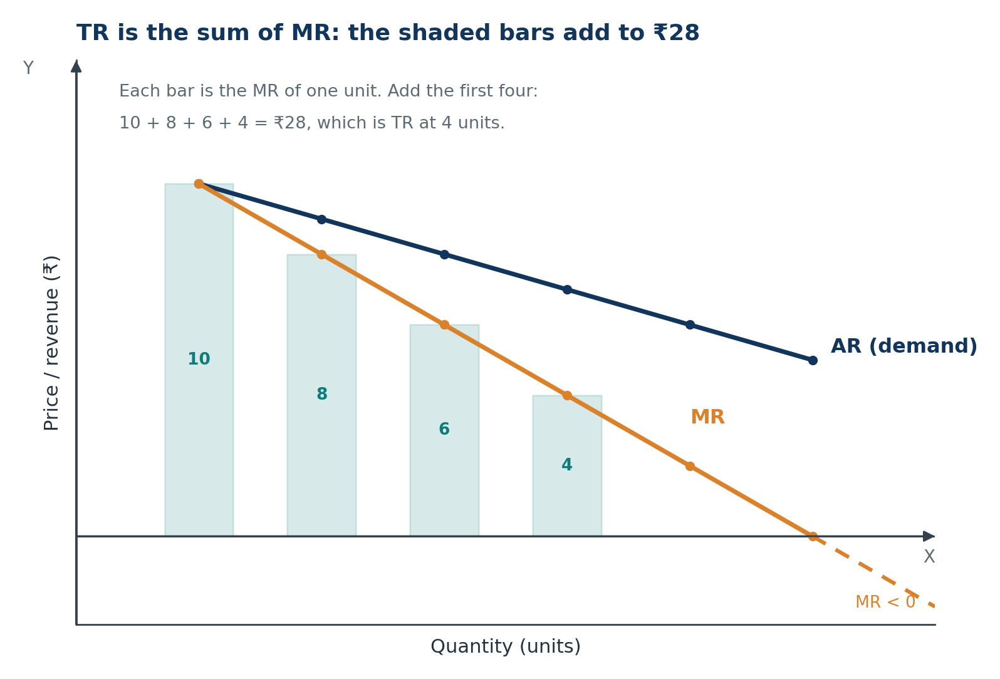
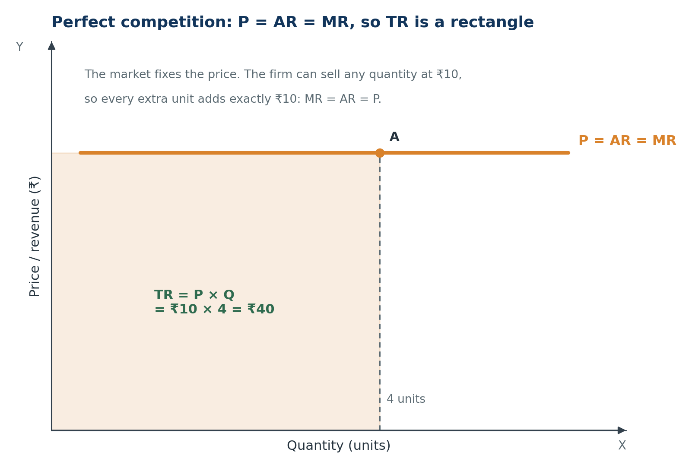
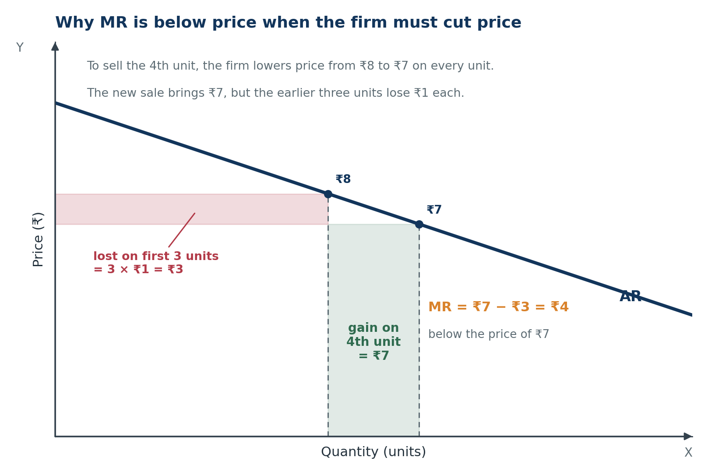
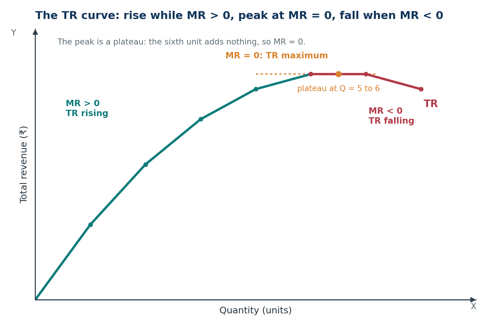
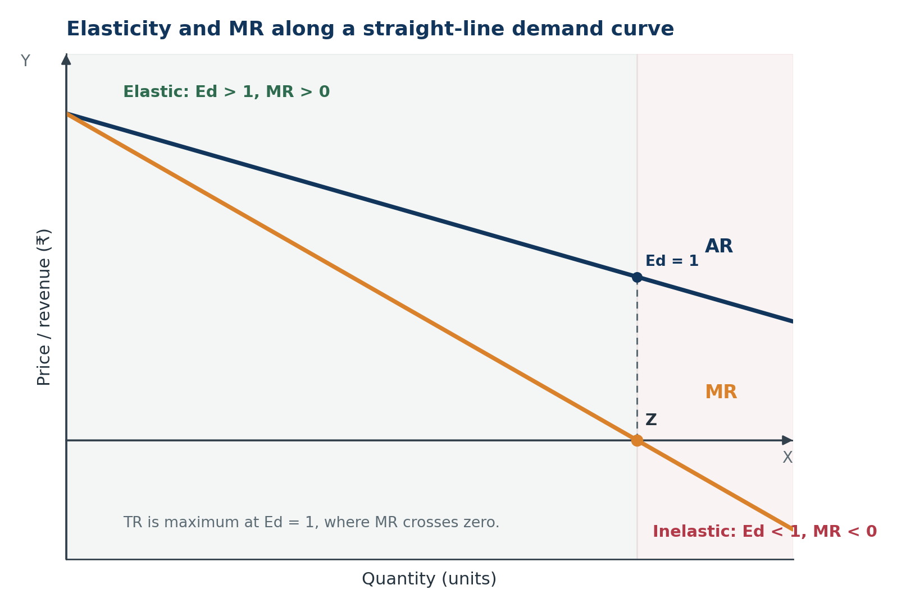
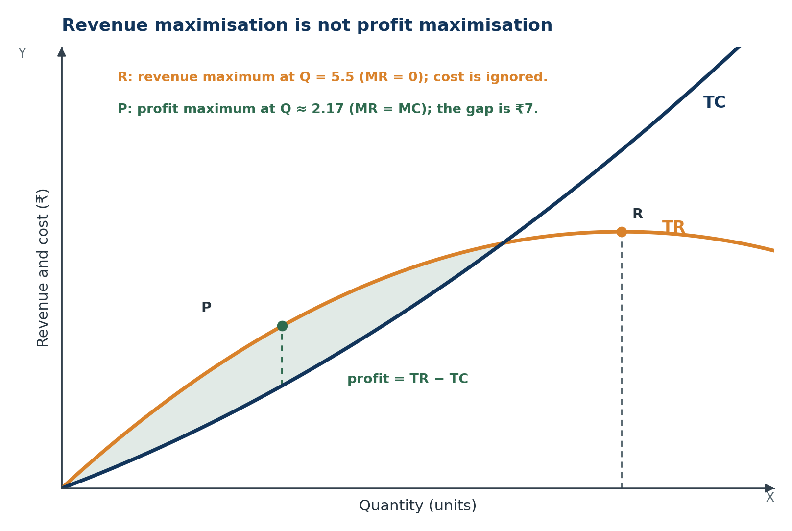

Microeconomics · Class 11Chapter 7Notes + quick revision
Revenue
Revenue is the money that comes in at the till. How it changes from one unit to the next explains why a price taker earns the same on every unit — and why a price maker earns less on each extra unit than the price it charges.
Chapter at a glance
Nine stops: from what revenue actually measures to the full worked example where revenue is highest but profit is not. Tap a card to jump straight in.
The one-line idea: revenue is what a firm receives from selling output, and how it changes from unit to unit explains why price takers and price setters behave differently.
The core question: how much does a firm receive as it sells more, and how is that linked to price, elasticity and profit?
Key Terms — Read These First
The words that carry marks. Read them once now, then test yourself after the chapter.
- Revenue
- The amount a firm receives from selling its output in a given period.
- Total revenue (TR)
- Total receipts from sales: TR = P × Q when one price applies.
- Average revenue (AR)
- Revenue per unit sold: AR = TR ÷ Q. With a uniform price, AR = P.
- Marginal revenue (MR)
- The addition to total revenue from selling one more unit: MR = ΔTR ÷ ΔQ.
- AR curve
- The demand curve seen from the seller's side: at each quantity it shows the price buyers pay.
- Price
- The amount paid for one unit; revenue is price multiplied by quantity.
- Profit
- What remains after total cost is subtracted from total revenue: π = TR − TC.
- Price taker
- A firm that accepts the market price and cannot influence it; P = AR = MR.
- Price maker
- A firm with some control over price; it must lower price to sell more.
- Perfect competition
- A market with many buyers and sellers, an identical product, free entry and exit, and perfect knowledge.
- Imperfect competition
- Any market setting in which the firm faces downward-sloping demand and must cut price to sell more.
- Revenue schedule
- A table showing price, quantity, TR, AR and MR at each output.
- Revenue maximisation
- Choosing the output where TR is highest, which requires MR = 0.
- Profit maximisation
- Choosing the output where TR − TC is largest, which requires MR = MC with MC rising.
- Elasticity of demand
- The responsiveness of quantity demanded to a change in price, written Ed.
- Unit elastic demand
- Ed = 1; a price change leaves total revenue unchanged, and MR = 0.
- Total cost (TC)
- Total fixed cost plus total variable cost, including normal profit as an implicit cost.
- Explicit cost
- An actual payment to outsiders: wages, rent, raw material, electricity.
- Implicit cost
- The value of the owner's own factors, including the normal return on their effort and capital.
- Normal profit
- The minimum return needed to keep the entrepreneur in the business; an implicit cost, so zero economic profit.
- Supernormal profit
- The surplus left after every cost, including normal profit, has been paid.
Meaning of Revenue
The idea of this section. Revenue is the money that comes in from selling goods. It is not the price of one unit, and it is not profit — profit is what survives after cost is paid.
1.1 Revenue, price and profit
Definition. Revenue is the amount a firm receives from the sale of its output in a given period.
In simple words. Revenue is the money that lands in the till when goods are sold, before any expense is paid.
Example. A bakery sells 200 loaves at ₹40 each. Its revenue is 200 × 40 = ₹8,000. The ₹40 is the price of one loaf; ₹8,000 is the revenue from all loaves sold.
| Concept | What it measures | In the bakery example |
|---|---|---|
| Price | The amount paid for one unit | ₹40 per loaf |
| Revenue | Receipts from all units sold | ₹40 × 200 = ₹8,000 |
| Cost | The money value of the inputs used | ₹6,500 for flour, wages, rent and fuel |
| Profit | What remains after cost is subtracted | ₹8,000 − ₹6,500 = ₹1,500 |
Revenue is not profit. A firm with ₹10 lakh revenue and ₹9.5 lakh cost earns ₹50,000 profit. A smaller firm with ₹2 lakh revenue and ₹1.2 lakh cost earns ₹80,000. Less revenue can still mean more profit.
Here TR is total revenue, P is price per unit and Q is quantity sold. The formula assumes one price for every unit; if different units sell at different prices, add each sale separately.
Top line, bottom line. Revenue is the top line of the income statement. Profit is what remains at the bottom after cost has been deducted. A large top line with an even larger cost can still produce a loss.
1.2 Why revenue is a flow
Revenue is measured over a period — a day, a week, a month or a year. It is a flow, not a stock. A stock is a quantity at a point in time, such as cash in the bank or goods in a warehouse.
Example. A shop sells ₹20,000 of goods on Monday. Its revenue for Monday is ₹20,000. That figure does not carry forward to Tuesday; Tuesday's revenue depends on Tuesday's sales.
This is why exam questions usually say “per day”, “per week” or “in a year”. The time period is part of the definition. Revenue of ₹5 lakh means little until you know whether it is monthly or annual.
Revenue is also not the same as cash received. A credit sale creates revenue when the sale is made, even if the payment arrives later. For this chapter, however, we follow the textbook convention and treat sales receipts as revenue.
- Q1. Define revenue and distinguish it from price and profit.
- Q2. A shop sells 40 notebooks at ₹25 each. Its total cost is ₹800. Find TR and profit.
- Q3. Why can a firm with high revenue still make a loss?
Show answers
- Revenue is the amount received from sales over a period. Price is the amount for one unit; profit is revenue minus total cost.
- TR = 40 × ₹25 = ₹1,000. Profit = ₹1,000 − ₹800 = ₹200.
- Revenue records only the inflow. If total cost is larger than total revenue, the difference is a loss, however large the revenue.
The Three Revenue Concepts
The idea of this section. The same sales can be measured three ways: as a total, per unit, or at the margin. TR, AR and MR are those three views.
2.1 Total revenue
Definition. Total revenue is the total receipts of a firm from the sale of a given quantity of output.
If the firm charges one price, multiply price by quantity. If it charges different prices for different units, add each sale: TR = P1Q1 + P2Q2 + …
Example. A firm sells 5 units at ₹10 each. TR = 10 × 5 = ₹50.
2.2 Average revenue
Definition. Average revenue is revenue per unit of output sold.
With a uniform price, AR equals the price: if 5 units bring in ₹50, each unit brings in ₹10. Even when price changes with quantity, AR at a given output is the price at which that output is sold.
The AR curve is the demand curve. At each quantity, AR shows the price buyers are willing to pay for that quantity — exactly what a demand curve shows. They are the same curve seen from two sides of the market.
Why this matters. A downward-sloping demand curve is also a downward-sloping AR curve. When you shift the demand curve, you are shifting the firm's average revenue curve.
2.3 Marginal revenue
Definition. Marginal revenue is the addition to total revenue from selling one more unit.
Here Δ means “change in”, TRn is revenue from n units and TRn−1 is revenue from the previous number of units. For one extra unit, MR is new TR minus old TR.
The first unit is special. Before it, TR is zero. Selling the first unit takes TR from 0 to its price, so MR of the first unit equals its price.
Example. TR at 3 units is ₹24 and at 4 units is ₹28. The fourth unit's MR is 28 − 24 = ₹4.
2.4 A revenue schedule
Here the firm must lower price to sell more. That is the imperfect-competition case; we will use it throughout the chapter.
| Quantity (Q) | Price (₹) = AR | Total revenue (₹) TR = P × Q | Marginal revenue (₹) MR = TRn − TRn−1 |
|---|---|---|---|
| 1 | 10 | 10 | 10 |
| 2 | 9 | 18 | 8 |
| 3 | 8 | 24 | 6 |
| 4 | 7 | 28 | 4 |
| 5 | 6 | 30 | 2 |
| 6 | 5 | 30 | 0 |
Third row: 3 × 8 = 24, and 24 − 18 = 6. Last row: 6 × 5 = 30, and 30 − 30 = 0. The sixth unit adds nothing.
2.5 How the three are related
- TR is the sum of MR. TR = MR1 + MR2 + … + MRn. The MR column above sums to ₹30, which is TR at 6 units.
- MR is the slope of TR. Each MR value is the change in TR per extra unit. A constant MR gives a straight TR line; a falling MR gives a TR curve that bends.
- AR and MR follow the average–marginal rule. When AR falls, MR lies below it; when AR is constant, MR equals it. The same pattern appears with AP–MP and AC–MC.
Here ΣMR is the sum of the marginal revenues of all units sold.

What to notice. The bars are not extra revenue on top of TR; they build TR. Add 10 + 8 + 6 + 4 and you get ₹28. The gap between AR and MR is the revenue lost on earlier units when the firm cuts price to sell one more.
- Q1. Define AR and MR. Why does AR equal price when all units sell at the same price?
- Q2. For Q = 1 to 4, TR is ₹20, ₹36, ₹48 and ₹56. Find AR and MR.
- Q3. Why is the MR of the first unit equal to its price?
Show answers
- AR = TR ÷ Q is revenue per unit; MR = ΔTR ÷ ΔQ is the addition from one more unit. With a uniform price, TR ÷ Q equals that price.
- AR = 20, 18, 16, 14. MR = 20, 16, 12, 8; for example, 48 − 36 = ₹12.
- TR before the first unit is zero. Selling it takes TR from 0 to its price, so the whole price is the addition.
Revenue under Perfect Competition
The idea of this section. Under perfect competition the firm is too small to move the market price. It can sell any quantity at that price, so every unit brings in exactly the same amount.
3.1 Price taker: P = AR = MR
Definition. Perfect competition has many buyers and sellers of an identical product, free entry and exit, and perfect knowledge, so no single firm can influence the market price.
The firm is a price taker. It accepts the market price, can sell any quantity at that price, and sells nothing above it. It does not need to lower price to sell more.
- AR is TR ÷ Q, which equals the market price at every quantity.
- Each extra unit sells at the same price, so MR equals that price too.
- Therefore P = AR = MR, and the three appear as one horizontal line.
The firm's demand curve is horizontal at the market price. At that price buyers take any quantity the firm offers; at a higher price they take none. This is why the demand curve is described as perfectly elastic.
3.2 The TR line
With price constant, TR = P × Q is a straight line from the origin. Its slope is P, which is also MR. Revenue rises by the same amount with every extra unit; it never rises at a diminishing rate.
| Quantity (Q) | Price (₹) = AR | TR (₹) | MR (₹) |
|---|---|---|---|
| 1 | 10 | 10 | 10 |
| 2 | 10 | 20 | 10 |
| 3 | 10 | 30 | 10 |
| 4 | 10 | 40 | 10 |
| 5 | 10 | 50 | 10 |
Each extra unit adds ₹10, so MR = ₹10 and TR rises by ₹10 each time. The TR line has a constant slope of ₹10.

3.3 Reading the rectangle
At any quantity, TR is a rectangle: height is price, width is quantity. At 4 units the rectangle is 10 × 4 = ₹40. At 5 units it is 10 × 5 = ₹50.
Because the height does not change, the area grows in proportion to quantity. That is the geometric meaning of a straight TR line: equal additions to width produce equal additions to area.
Exam line. A perfectly competitive firm is a price taker, so its demand curve is horizontal at the market price and P = AR = MR at every output.
- Q1. Why is a perfectly competitive firm's AR curve horizontal?
- Q2. The market price is ₹15. For Q = 1 to 4, find TR, AR and MR.
- Q3. Why does the TR line pass through the origin?
Show answers
- The firm is a price taker and can sell any quantity at the same price, so AR is that price at every quantity.
- TR = 15, 30, 45, 60. AR = ₹15 throughout. MR = ₹15 at every unit, including the first (15 − 0).
- TR = P × Q, so at Q = 0, TR = 0. With P constant, each extra unit adds the same amount, so the line is straight.
Revenue under Imperfect Competition
The idea of this section. When the firm is large enough to face a downward-sloping demand curve, selling more means charging a lower price. The price cut applies to every unit, so marginal revenue falls below price.
4.1 AR falls, MR falls faster
Definition. Imperfect competition — monopoly, monopolistic competition and oligopoly — means the firm faces downward-sloping demand and has some control over price. It is a price maker.
To sell more, the firm must lower price. Because it charges one price to all buyers, the cut applies to units it could already have sold at the old price. Revenue per unit (AR) falls with quantity, and the extra revenue from the last unit (MR) falls even faster.
A numerical example. Suppose the firm sells 3 units at ₹8 and wants to sell a fourth. It must cut the price to ₹7 on all four units. It gains ₹7 on the fourth unit but loses ₹1 on each of the first three, a loss of ₹3. So MR = 7 − 3 = ₹4, while AR = ₹7.
Here P is the price of the extra unit, Q is the quantity before the increase and ΔP ÷ ΔQ is the change in price per extra unit (negative here). The second term measures the revenue lost on earlier units, which is why MR < AR.
For a straight-line demand curve, MR falls twice as fast. If AR is P = a − bQ, then MR = a − 2bQ. AR's slope is −b; MR's slope is −2b. In the example, AR falls ₹1 per unit while MR falls ₹2.

What to notice. The red strip is revenue lost on units the firm could already sell; the green block is revenue gained from the fourth unit. MR nets the two. The price charged is ₹7, but the extra revenue is only ₹4 — that gap is why MR lies below AR.
4.2 A revenue schedule
| Quantity (Q) | Price (₹) = AR | TR (₹) | MR (₹) |
|---|---|---|---|
| 1 | 10 | 10 | 10 |
| 2 | 9 | 18 | 8 |
| 3 | 8 | 24 | 6 |
| 4 | 7 | 28 | 4 |
| 5 | 6 | 30 | 2 |
| 6 | 5 | 30 | 0 |
MR is below AR after the first unit and reaches zero at the sixth, where TR stops rising. A seventh unit at ₹4 would make TR ₹28 and MR −₹2.
Why is MR of the first unit equal to price? There are no earlier units to lose revenue on. The first unit's MR is simply its price. From the second unit onward, the price cut on earlier units pulls MR below AR.
4.3 Positive, zero and negative MR
| MR | TR | What it means |
|---|---|---|
| Positive | Rising | The extra unit adds revenue, even after the price cut on earlier units. |
| Zero | Maximum | The extra unit adds nothing; TR has stopped rising. |
| Negative | Falling | The loss on earlier units is larger than the revenue from the extra unit. |
Negative MR does not mean a negative price. Price is still ₹4 or ₹5; the firm is simply giving up so much revenue on earlier units that the new sale reduces TR. This is why MR can be negative while AR remains positive.
One-line test. AR tells you the price of the last unit. MR tells you what the last unit actually added to total revenue. Under imperfect competition, MR is the smaller number.
- Q1. Why is MR below AR under imperfect competition?
- Q2. Price is ₹12, ₹10, ₹8 and ₹6 for Q = 1 to 4. Find TR and MR.
- Q3. Can MR be negative when the price is still positive?
Show answers
- Selling an extra unit requires a lower price on every unit. The firm gains the new price on the extra unit but loses revenue on earlier ones, so MR < price.
- TR = 12, 20, 24, 24; MR = 12, 8, 4, 0. The fourth unit adds nothing because the price cut cancels its revenue.
- Yes. If the cut applies to many earlier units, the loss on them can exceed the revenue from the extra unit, so MR is negative while price is positive.
The TR Curve
The idea of this section. TR is the sum of the MR values. The sign of MR — positive, zero or negative — decides whether TR rises, stops or falls.
5.1 The three phases
| MR | TR | Meaning |
|---|---|---|
| MR > 0 | Rising | Each extra unit adds revenue, so TR is increasing. |
| MR = 0 | Maximum | The last unit adds nothing; TR has reached its peak. |
| MR < 0 | Falling | The last unit subtracts revenue, so TR is decreasing. |

What to notice. The peak is a plateau at 5–6 units because the sixth unit adds nothing. The left arm is steep at first and flattens as MR falls; the right arm falls when MR is negative. The sign of MR, not the level of price, tells TR which way to go.
5.2 Under perfect competition
With P constant, TR = P × Q is a straight line from the origin with slope P = MR. It keeps rising as long as the firm sells more. There is no revenue-maximising quantity at a positive price: a price taker can sell all it wants at the market price.
This is a useful contrast. A straight TR line means constant MR. A curved TR line means changing MR.
5.3 Under imperfect competition
TR rises at a diminishing rate, peaks and falls. For a straight-line demand curve it is an inverted U: MR falls steadily, crosses zero at the peak and then turns negative.
Maximum revenue is not maximum profit. Revenue ignores cost. A firm can maximise TR and still make a loss if cost is high enough. Profit maximisation needs MR and MC together, which is the subject of Chapter 8.
Exam line. TR is maximum where MR = 0. Maximum MR only means TR is rising fastest; it does not mean TR is at its peak.
- Q1. State the relationship between MR and TR in the three phases.
- Q2. MR is ₹8, ₹5, ₹0 and −₹3 for Q = 1 to 4. Describe TR.
- Q3. Why is TR maximum when MR = 0?
Show answers
- While MR is positive, TR rises; when MR is zero, TR is maximum; when MR is negative, TR falls.
- TR rises by ₹8, then ₹5, reaches its maximum after the third unit and falls by ₹3 with the fourth.
- MR is the addition to TR from the last unit. A zero addition means TR has stopped rising, so it is at its peak.
AR, MR and Elasticity
The idea of this section. Because AR is the demand curve, price elasticity is written directly into the firm's revenue numbers. Elastic demand goes with positive MR; inelastic demand goes with negative MR.
6.1 The formula
Price elasticity of demand measures how quantity demanded responds to a change in price. Because AR is the demand curve, elasticity can be linked to AR and MR.
Here MR is marginal revenue, AR is average revenue (price) and Ed is price elasticity of demand, taken as a positive number.
Derivation in words. TR = P × Q. When output rises by one unit, revenue changes for two reasons: the firm sells one more unit at the new price, and it receives a lower price on the units it was already selling. Writing that change per unit gives MR = P + Q × (ΔP ÷ ΔQ). Factoring out P and using Ed = −(P ÷ Q) × (ΔQ ÷ ΔP) gives MR = P(1 − 1/Ed). Since P = AR, the formula follows.
Rearranged for elasticity.
Example. If AR = ₹20 and MR = ₹12, then Ed = 20 ÷ (20 − 12) = 2.5. Demand is elastic and MR is positive.
6.2 The three elasticity zones
| Elasticity | MR | TR | Interpretation |
|---|---|---|---|
| Ed > 1 (elastic) | Positive | Rising | A price cut raises revenue. |
| Ed = 1 (unitary) | Zero | Maximum | Revenue is at its peak; a price change leaves TR unchanged. |
| Ed < 1 (inelastic) | Negative | Falling | A price cut lowers revenue. |

What to notice. The MR curve crosses zero exactly below the midpoint of the demand curve. To the left, demand is elastic and a price cut raises TR; to the right, demand is inelastic and a price cut lowers TR. Unit elasticity is the boundary where TR is maximum.
This is the expenditure test from the seller's side. A price cut raises revenue only when demand is elastic; it leaves revenue unchanged at unit elasticity and reduces it when demand is inelastic.
6.3 Why a monopolist avoids the inelastic part
If demand is inelastic, MR is negative while marginal cost is positive, so MR < MC. Producing the last units subtracts from profit: cutting output and raising price saves cost and raises revenue at the same time.
A profit-maximising firm therefore produces where MR = MC on the elastic part of demand. If MC = 0, it stops exactly at unit elasticity, where MR = 0. It never chooses the inelastic part when MC is positive.
Link to Chapter 8. MR = MC is the profit rule. Because MC is positive, MR must also be positive at equilibrium, which means the firm operates where demand is elastic.
- Q1. State the relation between MR, AR and Ed.
- Q2. AR = ₹25 and MR = ₹15. Find Ed and say whether demand is elastic or inelastic.
- Q3. Why can MR = MC not hold on the inelastic part when MC is positive?
Show answers
- MR = AR(1 − 1/Ed), and Ed = AR ÷ (AR − MR).
- Ed = 25 ÷ (25 − 15) = 2.5. Since Ed > 1, demand is elastic.
- On the inelastic part MR < 0 < MC. The last units subtract from profit, so producing less raises profit.
Revenue vs Profit
The idea of this section. Revenue is what comes in; profit is what is left. Maximising one is not the same as maximising the other, because cost stands between them.
7.1 Two different objectives
Definition. Profit is the excess of total revenue over total cost.
Here π is profit, TR is total revenue and TC is total cost. TC includes normal profit as an implicit cost, so “profit” here means supernormal profit: what remains after every cost, including the owner's minimum required return.
| Objective | What is maximised | Condition | What it ignores |
|---|---|---|---|
| Revenue maximisation | TR | MR = 0 | Cost |
| Profit maximisation | TR − TC | MR = MC with MC rising | Nothing relevant; both revenue and cost are counted |
Unless MC = 0, the two outputs differ. The revenue-maximiser ignores cost and therefore produces more than the profit-maximiser.

What to notice. The TR curve is still rising when profit has already started falling, because cost rises faster than revenue. Revenue maximisation looks only at the top of the TR curve; profit maximisation looks at the gap between TR and TC. Only when MC = 0 do the two coincide.
7.2 A numerical comparison
| Q | TR (₹) | TC (₹) | Profit (₹) TR − TC | MR (₹) | MC (₹) |
|---|---|---|---|---|---|
| 1 | 10 | 5 | 5 | 10 | 5 |
| 2 | 18 | 11 | 7 | 8 | 6 |
| 3 | 24 | 18 | 6 | 6 | 7 |
| 4 | 28 | 26 | 2 | 4 | 8 |
| 5 | 30 | 35 | −5 | 2 | 9 |
| 6 | 30 | 45 | −15 | 0 | 10 |
Revenue peaks at 5–6 units (₹30), while profit peaks at 2 units (₹7). At 5 units the firm maximises revenue and loses ₹5.
The marginal reading. Expand while MR > MC. At 1 unit MR = 10 and MC = 5; at 2 units MR = 8 and MC = 6; at 3 units MR = 6 and MC = 7. Profit peaks at the last unit where MR still exceeds MC, which is 2 units. By 3 units MC has overtaken MR.
7.3 Why the answers differ
- Revenue looks only at the inflow. It rises whenever MR is positive, even if each extra unit costs more than it brings in.
- Profit looks at the gap. It rises only when MR > MC, stops when MR = MC and falls when MC > MR.
- Cost is the missing piece. A firm can have high revenue and a low profit, or high revenue and a loss, if cost rises faster.
Example. TR is ₹100 and TC is ₹85, so profit is ₹15. Later TR rises to ₹120 but TC rises to ₹110, so profit falls to ₹10. Revenue rose by ₹20; profit fell by ₹5.
Exam line. Revenue is maximised at MR = 0; profit is maximised at MR = MC with MC rising. A firm that stops at the revenue peak is ignoring cost.
- Q1. Distinguish revenue maximisation from profit maximisation.
- Q2. TR is ₹100 and TC is ₹85. Later TR rises to ₹120 but TC rises to ₹110. Compare profit.
- Q3. Why is MR = 0 the revenue-maximising condition?
Show answers
- Revenue maximisation chooses MR = 0; profit maximisation chooses MR = MC with MC rising. They coincide only if MC = 0.
- Profit first = 100 − 85 = ₹15; later = 120 − 110 = ₹10. Revenue rose by ₹20 but profit fell by ₹5 because cost rose faster.
- TR stops rising when the last unit adds nothing: MR = 0. Before that MR > 0 and TR rises; after, MR < 0 and TR falls.
A Worked Example
The idea of this section. One table, two questions: where is revenue highest, and where is profit highest? The answers are different, and the gap between them is the lesson.
8.1 The table
A firm faces a falling price. Fixed cost is ₹3, the value of TC at Q = 0. Complete the revenue and cost columns, then read the two maxima.
| Q | Price (₹) = AR | TR (₹) | MR (₹) | TC (₹) | MC (₹) | Profit (₹) |
|---|---|---|---|---|---|---|
| 0 | — | 0 | — | 3 | — | −3 |
| 1 | 10 | 10 | 10 | 8 | 5 | 2 |
| 2 | 9 | 18 | 8 | 12 | 4 | 6 |
| 3 | 8 | 24 | 6 | 15 | 3 | 9 |
| 4 | 7 | 28 | 4 | 21 | 6 | 7 |
| 5 | 6 | 30 | 2 | 30 | 9 | 0 |
| 6 | 5 | 30 | 0 | 42 | 12 | −12 |
How each column is built. TR = P × Q; AR = TR ÷ Q, which equals price; MR = TRn − TRn−1; MC = TCn − TCn−1; profit = TR − TC.
8.2 Revenue maximum
TR rises from ₹0 to ₹30, stays at ₹30 at 5 and 6 units, and would fall after that. Revenue is maximum at 5–6 units, where MR is ₹2 and then ₹0.
At Q = 6, MR = 0. The next unit would make MR negative and TR would fall. Revenue maximisation stops there; it does not look at cost.
8.3 Profit maximum
Profit rises from −₹3 to ₹9, then falls. The maximum is ₹9 at Q = 3.
- At Q = 2, MR = ₹8 and MC = ₹4. The third unit adds ₹6 to revenue and ₹3 to cost, so profit rises by ₹3.
- At Q = 3, MR = ₹6 and MC = ₹3. The fourth unit adds ₹4 to revenue but ₹6 to cost, so profit falls by ₹2.
- The MR and MC curves therefore cross between 3 and 4 units, with MC rising. Since output is sold in whole units, the last unit that still adds to profit is the third.
At Q = 3, price is ₹8 and average cost is 15 ÷ 3 = ₹5. Profit per unit is ₹3, and total profit is ₹3 × 3 = ₹9.
8.4 The exam habit
Revenue peaks at 5–6 units, while profit peaks at 3 units. At Q = 5 the firm has maximum revenue of ₹30 but profit is zero, because TC has also reached ₹30. Beyond Q = 3, cost rises faster than revenue, so the gap shrinks even while TR is still rising or flat.
Exam habit. Never write “maximum revenue” when the question asks for maximum profit. First locate the revenue peak with MR = 0; then locate the profit peak with MR = MC and MC rising; finally compare TR with TC at each output.
- Q1. In the table, why is MR of the first unit equal to ₹10 while the price is ₹10?
- Q2. Find TR, MR and profit at Q = 4. Is the firm maximising revenue or profit there?
- Q3. Why is profit maximum at Q = 3 although revenue is higher at Q = 5?
Show answers
- TR before the first unit is zero. Selling one unit at ₹10 takes TR from ₹0 to ₹10, so the whole ₹10 is the addition.
- TR = ₹28, MR = ₹4, profit = ₹28 − ₹21 = ₹7. It is neither: revenue is still rising (MR > 0), but profit has already fallen from ₹9 because MC = ₹6 is above MR = ₹4.
- At Q = 3, the gap TR − TC is ₹24 − ₹15 = ₹9. At Q = 5, TR is ₹30 but TC is also ₹30, so the gap is zero. Higher revenue does not mean higher profit when cost rises faster.
Common Mistakes, Recap and Exam Practice
The idea of this section. Most lost marks come from treating revenue, price and profit as the same thing, or from stopping at a formula without reading the diagram. Fix the traps, then test the chapter.
9.1 Common mistakes to avoid
| Mistake | Correct idea |
|---|---|
| “Revenue and profit mean the same.” | Revenue is the inflow; profit remains after total cost is subtracted. |
| “MR is simply the price of the extra unit.” | Under imperfect competition the price cut on earlier units is subtracted, so MR < price. |
| “Under perfect competition MR > AR.” | The firm is a price taker, so P = AR = MR. |
| “MR always falls twice as fast as AR.” | True only for a straight-line demand curve. |
| “TR is maximum when MR is maximum.” | TR is maximum when MR = 0; maximum MR only means TR is rising fastest. |
| “A firm should produce where TR is maximum.” | That ignores cost; profit is maximum where MR = MC with MC rising. |
| “Negative MR means a negative price.” | Price stays positive; the loss on earlier units outweighs the extra sale. |
| “The AR curve and demand curve are different.” | They are the same curve: AR is the price buyers pay at each quantity. |
Quick self-test. Cover the right column and explain each correction aloud. If you can do all eight without looking, the conceptual traps are handled.
9.2 Chapter recap
- Revenue is a flow over a period; it is not profit and not price.
- TR = P × Q; AR = TR ÷ Q = P; MR = ΔTR ÷ ΔQ = TRn − TRn−1.
- TR is the sum of MR values, and MR is the slope of TR.
- Perfect competition: P = AR = MR, a horizontal line, and TR is straight from the origin.
- Imperfect competition: AR slopes down, MR lies below AR and falls twice as fast for linear demand.
- MR can be positive, zero or negative; TR rises, is maximum, then falls.
- MR = AR(1 − 1/Ed) links revenue to elasticity. Elastic demand means MR > 0; unit elasticity means MR = 0; inelastic demand means MR < 0.
- Profit is TR − TC. Revenue maximisation (MR = 0) differs from profit maximisation (MR = MC with MC rising).
9.3 Formula sheet
| Concept | Formula | Remember |
|---|---|---|
| Total revenue | TR = P × Q | Total receipts |
| Average revenue | AR = TR ÷ Q = P | Per unit; the AR curve is the demand curve |
| Marginal revenue | MR = ΔTR ÷ ΔQ = TRn − TRn−1 | Addition from the last unit; slope of TR |
| TR from MR | TR = ΣMR | Area under MR |
| Perfect competition | P = AR = MR | Horizontal price line |
| Imperfect competition | MR < AR | MR below downward-sloping AR |
| Linear demand | MR slope = 2 × AR slope | MR falls twice as fast |
| AR, MR and elasticity | MR = AR(1 − 1/Ed) | Ed > 1 → MR > 0; Ed = 1 → MR = 0; Ed < 1 → MR < 0 |
| Elasticity from revenue | Ed = AR ÷ (AR − MR) | Use positive values |
| Profit | π = TR − TC | Revenue minus cost; TC includes normal profit |
| Two objectives | MR = 0; MR = MC with MC rising | Revenue maximum vs profit maximum |
9.4 Exam-style questions
Very short answer (1 mark)
- Define marginal revenue.
- Under perfect competition, what is the relation between AR and MR?
- What is MR when TR is maximum?
- If AR = ₹15 and MR = ₹10, is demand elastic or inelastic?
- What happens to TR when MR is negative?
Short answer (3 marks)
- Distinguish between average revenue and marginal revenue with one example each.
- Explain why MR is less than AR under imperfect competition.
- For Q = 1, 2, 3, AR is ₹10, ₹8 and ₹6. Find TR and MR.
- Explain the relationship between TR and MR with a schedule.
Long answer (4–6 marks)
- Explain the behaviour of AR, MR and TR under perfect competition, with a diagram.
- “A firm can have high revenue and low profit.” Explain, using a numerical example and the two objectives.
- Derive MR = AR(1 − 1/Ed) and explain why a monopolist avoids the inelastic part.
Show answer pointers
Very short answer
- The addition to TR from one more unit: MR = ΔTR ÷ ΔQ.
- P = AR = MR; the curves coincide as a horizontal line.
- MR = 0.
- Ed = 15 ÷ (15 − 10) = 3, so demand is elastic.
- TR falls.
Short answer
- AR is revenue per unit; MR is the change in TR from one more unit. If TR is ₹36 at 2 units and ₹48 at 3 units, AR at 3 units is ₹16 and MR of the third unit is ₹12.
- To sell more, the firm lowers price on all units. It gains the new price on the extra unit but loses revenue on earlier units, so MR < price.
- TR = 10, 16, 18; MR = 10, 6, 2.
- While MR is positive, TR rises; when MR = 0, TR is maximum; when MR is negative, TR falls.
Long answer
- Define the concepts. Price is fixed, so AR = MR = P and the line is horizontal. TR = P × Q is straight from the origin with slope P. Refer to Figure 7.2.
- Revenue is the inflow; profit is TR − TC. Use a table where TR stays at ₹30 but TC rises faster, so profit falls. Revenue is maximised at MR = 0, profit at MR = MC.
- MR = P + Q(ΔP ÷ ΔQ) = P[1 + (Q ÷ P)(ΔP ÷ ΔQ)]. The term in brackets is 1 − 1/Ed, so MR = AR(1 − 1/Ed). If demand is inelastic, MR < 0 < MC, so cutting output and raising price raises profit.
9.5 One-minute revision
| Must know | Statement |
|---|---|
| Revenue vs profit | Revenue is the inflow; profit = TR − TC. |
| Three concepts | TR = P × Q; AR = TR ÷ Q = P; MR = ΔTR ÷ ΔQ. |
| Graph link | MR is the slope of TR; TR is the sum (area) under MR. |
| Perfect competition | P = AR = MR; horizontal line; TR straight from origin. |
| Imperfect competition | AR slopes down; MR < AR; MR falls twice as fast for linear demand. |
| TR phases | MR > 0 → TR rising; MR = 0 → TR maximum; MR < 0 → TR falling. |
| Elasticity and objectives | MR = AR(1 − 1/Ed); revenue max at MR = 0; profit max at MR = MC. |
Quick revision, done properly
How to use this file (30 seconds): read one block → cover it → answer the recall questions aloud → open the answer to check → move on. Total time: about 18 minutes.
- 01Readone block of notes
- 02Coverthe page and recall
- 03Answerthe drill aloud
- 04Checkand move on
24 recall questions · one confusion clinic · one rapid-fire table · one blank-page test.
Revenue + the three concepts
The chapter in 12 lines
- Revenue is the money a firm receives from selling output over a period. It is a flow, not a stock.
- Revenue is not profit and not price. Price is for one unit; profit is revenue minus cost.
- TR = P × Q. Add each sale if different units sell at different prices.
- AR = TR ÷ Q. With a uniform price, AR = P.
- MR = ΔTR ÷ ΔQ. It is the addition from one more unit, not the price of that unit in general.
- The AR curve is the demand curve. At each quantity it shows the price buyers pay.
- TR is the sum of MR. The MR column builds the TR total.
- MR is the slope of TR. Constant MR gives a straight TR line.
- Perfect competition: the firm is a price taker, so P = AR = MR.
- Its demand curve is horizontal. It can sell any quantity at the market price, nothing above it.
- Its TR line is straight from the origin with slope P; there is no revenue-maximising output at a positive price.
- Imperfect competition: AR slopes down, MR lies below AR, and MR can become negative.
TR, AR and MR
| Concept | Meaning | Formula | What it tells you |
|---|---|---|---|
| Total revenue (TR) | Receipts from all units sold | TR = P × Q | Total inflow; the TR curve plots it against output |
| Average revenue (AR) | Revenue per unit | AR = TR ÷ Q = P | The price at each quantity; AR is the demand curve |
| Marginal revenue (MR) | Addition from one more unit | MR = ΔTR ÷ ΔQ | The slope of TR; decides whether TR rises or falls |
One line: TR is the total, AR is the per-unit price, and MR is the change. The first unit's MR equals its price because TR starts at zero.
The revenue schedule
| Q | Price = AR (₹) | TR (₹) | MR (₹) |
|---|---|---|---|
| 1 | 10 | 10 | 10 |
| 2 | 9 | 18 | 8 |
| 3 | 8 | 24 | 6 |
| 4 | 7 | 28 | 4 |
| 5 | 6 | 30 | 2 |
| 6 | 5 | 30 | 0 |
TR is the sum of MR: 10 + 8 + 6 + 4 + 2 + 0 = 30 at 6 units. MR is below AR after the first unit because the price cut applies to earlier units too.
Perfect competition
| Feature | Rule | Reason |
|---|---|---|
| Price setting | Price taker | The firm is too small to affect the market price |
| Demand curve | Horizontal at P | It can sell any quantity at P, none above P |
| Revenue curves | P = AR = MR | Every unit sells at the same price |
| TR curve | Straight line from origin, slope P | Constant MR means equal additions to TR |
| Revenue maximum | No finite maximum at P > 0 | TR keeps rising as quantity rises |
Write it this way: under perfect competition, P = AR = MR, so the demand curve, the AR curve and the MR curve are the same horizontal line.
Recall drill — Session 1
Define revenue and say whether it is a stock or a flow.
Show answer
The amount received from sales over a period. It is a flow, not a stock.
A shop sells 60 units at ₹25 each. Find TR and AR.
Show answer
TR = 60 × 25 = ₹1,500. AR = 1,500 ÷ 60 = ₹25.
Write the formulas for TR, AR and MR.
Show answer
TR = P × Q; AR = TR ÷ Q = P; MR = ΔTR ÷ ΔQ = TRn − TRn−1.
TR is ₹20, ₹36, ₹48 and ₹56 at Q = 1 to 4. Find AR and MR.
Show answer
AR = 20, 18, 16, 14. MR = 20, 16, 12, 8.
Why is the AR curve the same as the demand curve?
Show answer
AR is the price at each quantity. A demand curve also shows the price buyers pay at each quantity, so the two coincide.
Under perfect competition, why is P = AR = MR?
Show answer
The firm is a price taker: every unit sells at the same price, so revenue per unit is P and each extra unit adds P.
Why is TR a straight line under perfect competition?
Show answer
Price is constant, so each extra unit adds the same amount. TR = P × Q is a straight line from the origin with slope P.
P = ₹15 and Q = 4. Find TR, AR and MR.
Show answer
TR = 15 × 4 = ₹60; AR = ₹15; MR = ₹15.
Imperfect competition + elasticity
Why MR < AR
The firm is a price maker. To sell another unit it must lower the price on every unit, not just the new one.
| Step | Amount | Effect |
|---|---|---|
| Old price for 3 units | ₹8 each | TR = ₹24 |
| New price for 4 units | ₹7 each | TR = ₹28 |
| Gain on the 4th unit | ₹7 | New sale adds revenue |
| Loss on the first 3 | 3 × ₹1 = ₹3 | Earlier units earn less |
| MR of the 4th unit | ₹7 − ₹3 = ₹4 | Below the ₹7 price |
Key line: MR is the revenue from the extra unit minus the revenue lost on the units that could have sold at the old price.
The TR curve
| MR | TR | Meaning |
|---|---|---|
| Positive | Rising | Extra units add revenue |
| Zero | Maximum | The last unit adds nothing |
| Negative | Falling | The loss on earlier units outweighs the new sale |
For the schedule above, TR = 10, 18, 24, 28, 30, 30 and 28 at Q = 1 to 7. MR becomes zero at 6 units and negative at 7 units, so TR peaks at 5–6 units and then falls.
Never say “TR is maximum when MR is maximum.” TR is maximum when MR = 0.
Elasticity and MR
| Elasticity | MR | TR | Reading |
|---|---|---|---|
| Ed > 1 | Positive | Rising | Price cut raises revenue |
| Ed = 1 | Zero | Maximum | Price change leaves TR unchanged |
| Ed < 1 | Negative | Falling | Price cut lowers revenue |
Example: AR = ₹30 and MR = ₹18 gives Ed = 30 ÷ (30 − 18) = 2.5, so demand is elastic. If AR = ₹25 and MR = ₹15, Ed = 25 ÷ 10 = 2.5 as well.
Monopolist’s rule: with positive MC, equilibrium MR = MC must have MR > 0, so the firm operates on the elastic part of demand. It never chooses the inelastic part.
Recall drill — Session 2
Why is MR below AR under imperfect competition?
Show answer
To sell more, the firm lowers price on every unit. It gains the new price on the extra unit but loses revenue on earlier units, so MR < price.
Price is ₹12, ₹10, ₹8 and ₹6 at Q = 1 to 4. Find TR and MR.
Show answer
TR = 12, 20, 24, 24; MR = 12, 8, 4, 0.
Can MR be negative while price is positive? Explain.
Show answer
Yes. The price cut on many earlier units can cost more revenue than the new unit brings in, so MR is negative even though the price is positive.
State how TR moves when MR is positive, zero and negative.
Show answer
Positive → TR rising; zero → TR maximum; negative → TR falling.
Why is TR maximum when MR = 0?
Show answer
The last unit adds nothing. Before that MR > 0 and TR is rising; after that MR < 0 and TR is falling.
AR = ₹30 and MR = ₹18. Find Ed.
Show answer
Ed = 30 ÷ (30 − 18) = 2.5. Demand is elastic.
AR = ₹25 and MR = ₹15. Find Ed.
Show answer
Ed = 25 ÷ (25 − 15) = 2.5. Demand is elastic.
Why does a monopolist avoid the inelastic part of demand?
Show answer
There MR < 0 < MC, so producing the last units lowers profit. Cutting output and raising price raises profit.
Revenue vs profit + worked example
Two objectives
| Basis | Revenue maximisation | Profit maximisation |
|---|---|---|
| What is maximised | TR | TR − TC |
| Condition | MR = 0 | MR = MC with MC rising |
| Ignores | Cost | Nothing relevant; both revenue and cost matter |
| Output compared with the other | Larger unless MC = 0 | Smaller when MC > 0 |
| Possible result | High revenue, zero or negative profit | Largest possible profit |
Example: TR ₹100, TC ₹85 gives profit ₹15. Later TR ₹120, TC ₹110 gives profit ₹10. Revenue rises by ₹20 but profit falls by ₹5.
One line: a firm can maximise revenue and still lose money. Profit is the gap, not the inflow.
Worked example
| Q | P = AR (₹) | TR (₹) | MR (₹) | TC (₹) | MC (₹) | Profit (₹) |
|---|---|---|---|---|---|---|
| 1 | 10 | 10 | 10 | 8 | 5 | 2 |
| 2 | 9 | 18 | 8 | 12 | 4 | 6 |
| 3 | 8 | 24 | 6 | 15 | 3 | 9 |
| 4 | 7 | 28 | 4 | 21 | 6 | 7 |
| 5 | 6 | 30 | 2 | 30 | 9 | 0 |
| 6 | 5 | 30 | 0 | 42 | 12 | −12 |
- Revenue maximum: Q = 5–6, TR = ₹30, MR = ₹2 then ₹0.
- Profit maximum: Q = 3, profit = ₹9; price ₹8, AC ₹5, profit per unit ₹3.
- Q = 4: profit falls to ₹7 because MC = ₹6 is above MR = ₹4.
- Q = 5: revenue is still ₹30 but profit is zero because TC is also ₹30.
- MR = MC crossing lies between 3 and 4 with MC rising; the last whole unit that adds profit is 3.
Read the question first: “maximum revenue” means MR = 0; “maximum profit” means MR = MC with MC rising. They are different outputs in this table.
Exam lines and traps
| Question | Exam-ready line |
|---|---|
| Why is MR below AR? | To sell more, the firm cuts price on every unit, so it loses revenue on earlier units. |
| Perfect competition revenue? | P = AR = MR; a horizontal line at the market price. |
| Why is TR straight? | Price is constant, so each extra unit adds the same revenue; slope = P. |
| When is TR maximum? | When MR = 0; before it MR > 0, after it MR < 0. |
| When is profit maximum? | When MR = MC and MC is rising. |
| High revenue but low profit? | Cost is high; profit is TR − TC, not TR alone. |
| Negative MR? | Price is positive, but the loss on earlier units exceeds the new sale's revenue. |
| AR and demand? | The same curve: AR is the price at each quantity. |
Five-mark structure: define revenue → write TR, AR and MR → show the market setting → use the table or diagram → finish with the revenue/profit conclusion.
Recall drill — Session 3
Distinguish revenue maximisation from profit maximisation.
Show answer
Revenue maximisation chooses MR = 0 and ignores cost. Profit maximisation chooses MR = MC with MC rising and counts both revenue and cost.
TR is ₹100 and TC ₹85; later TR ₹120 and TC ₹110. Compare profit.
Show answer
Profit falls from ₹15 to ₹10. Revenue rose ₹20, but cost rose ₹25.
In the worked example, where is revenue maximum and where is profit maximum?
Show answer
Revenue maximum at Q = 5–6, TR = ₹30. Profit maximum at Q = 3, profit = ₹9.
Why is Q = 5 not the profit maximum even though TR is ₹30?
Show answer
TC is also ₹30, so profit is zero. At Q = 3, profit is ₹9.
At Q = 3, find price, AC, profit per unit and total profit.
Show answer
Price ₹8; AC = 15 ÷ 3 = ₹5; profit per unit ₹3; total profit ₹9.
Why is profit maximum at MR = MC with MC rising?
Show answer
While MR > MC, an extra unit adds profit; while MC > MR, it subtracts. The rising crossing is where the additions stop and profit is largest.
“High revenue means high profit.” True or false?
Show answer
False. Profit is TR − TC. High revenue with higher cost can mean low profit or a loss.
Give the three-step method for a revenue-versus-profit numerical.
Show answer
Complete TR, MR, TC and MC; find the revenue peak at MR = 0; find the profit peak at MR = MC with MC rising, then compare TR with TC.
Confusion Clinic
The one difference that decides the mark.
| Pair | The one difference |
|---|---|
| Revenue vs profit | Money coming in vs what remains after cost |
| Revenue vs price | All units sold vs one unit |
| TR vs AR | Total receipts vs receipts per unit |
| AR vs MR | Revenue per unit vs addition from one more unit |
| MR vs price | Extra revenue after the price cut vs the price charged for the last unit |
| Perfect vs imperfect competition | Price taker with P = AR = MR vs price maker with AR > MR |
| Price taker vs price maker | Accepts market price vs must lower price to sell more |
| P = AR = MR vs AR > MR | Horizontal demand vs downward-sloping demand |
| MR = 0 vs MR = MC | Revenue maximum vs profit maximum |
| TR maximum vs profit maximum | Highest inflow vs widest TR − TC gap |
| MR positive vs TR rising | These always go together; negative MR goes with TR falling |
| Negative MR vs negative price | MR can be negative while price is positive |
| AR slope vs MR slope | For linear demand, MR is twice as steep |
| Average vs marginal | Per unit vs the next unit |
| Elastic vs inelastic | Ed > 1, MR > 0 vs Ed < 1, MR < 0 |
| Ed = 1 vs MR = 0 | Same point on the demand curve; TR is maximum |
| High revenue vs high profit | Large inflow vs large surplus after cost |
Rapid Fire
Cover the right column. Say the answer before you reveal it.
| Question | One-line answer |
|---|---|
| Revenue | Money received from sales over a period |
| TR | P × Q |
| AR | TR ÷ Q = P |
| MR | ΔTR ÷ ΔQ |
| AR curve | The demand curve |
| TR from MR | TR = sum of MR values |
| MR and TR | MR is the slope of TR |
| First unit’s MR | Equal to its price |
| Perfect competition | Price taker, P = AR = MR |
| Price taker | Cannot influence the market price |
| Perfect competition revenue curves | One horizontal line: P = AR = MR |
| Perfect competition TR line | Straight from origin, slope P |
| Imperfect competition | Price maker; AR slopes down |
| Price maker | Must lower price to sell more |
| MR under imperfect competition | Below AR |
| Linear demand MR slope | Twice the AR slope |
| MR > 0 | TR rising |
| MR = 0 | TR maximum |
| MR < 0 | TR falling |
| Revenue maximum condition | MR = 0 |
| Profit maximum condition | MR = MC with MC rising |
| Profit | TR − TC |
| High revenue, low profit | Cost is high; profit is the gap |
| MR, AR and elasticity | MR = AR(1 − 1/Ed) |
| Ed from AR and MR | AR ÷ (AR − MR) |
| AR ₹20, MR ₹12 | Ed = 2.5, elastic |
| Ed > 1 | MR > 0; TR rising |
| Ed = 1 | MR = 0; TR maximum |
| Ed < 1 | MR < 0; TR falling |
| Monopolist and inelastic demand | Avoids it; MR < 0 < MC |
| Worked example revenue maximum | Q = 5–6, TR = ₹30 |
| Worked example profit maximum | Q = 3, profit = ₹9 |
| Worked example Q = 3 profit | ₹24 − ₹15 = ₹9 |
| Worked example Q = 4 profit | ₹28 − ₹21 = ₹7 |
| Worked example Q = 5 profit | ₹30 − ₹30 = ₹0 |
| Why Q = 5 is not profit maximum | Revenue is highest, but profit is zero |
| MR = MC in the worked example | Crosses between 3 and 4, with MC rising |
| TC includes normal profit | Yes; profit here means supernormal profit |
| Fixed cost in the worked example | TC at Q = 0 = ₹3 |
| Five-mark structure | Define, formula, setting, table/diagram, conclusion |
Blank Page Test
10 minutes. Close the notes and tick each one you can write.
Close the file and write these from memory. Tick each one you complete.
Scoring: 12–15 ticks = exam ready. 8–11 = redo the recall drills for the missed sections. Below 8 = read the session notes again, then repeat this test tomorrow.
15-Minute Revision Plan
A timed route through the whole chapter, from first recall to the final line.
| Minutes | Do this |
|---|---|
| 0–3 | Session 1: revenue vs profit, TR, AR, MR, the 10/9/8 schedule |
| 3–6 | Session 1: perfect competition, P = AR = MR, horizontal demand, straight TR |
| 6–9 | Session 2: why MR < AR, the price-cut example, TR phases |
| 9–12 | Session 2: elasticity, MR = AR(1 − 1/Ed), the monopolist’s elastic zone |
| 12–15 | Session 3: worked example, revenue vs profit, Rapid Fire and Confusion Clinic |
Final line to remember: revenue is what comes in, profit is what remains. TR peaks where MR = 0, but a firm maximises profit where MR = MC with MC rising. Under perfect competition P = AR = MR; under imperfect competition AR > MR, so price is above marginal revenue.
Every table in quick revision is built from the full notes.